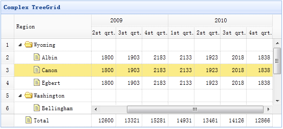

Extend from $.fn.datagrid.defaults. Override defaults with $.fn.treegrid.defaults.
The treegrid is used to show hierarchical data in grid. It is based on datagrid and combines treeview and editable grid. The treegrid allows you to create customizable, async expandable rows and show hierarchical data in muliple columns.
Create treegrid in HTML markup. For the most part, the treegrid follows the same structure and formatting as datagrid.
Create treegrid using javascript.
The properties extend from datagrid, below is the added properties for treegrid.
| Name | Type | Description | Default |
|---|---|---|---|
| idField | string | Defines the key field to identify a tree node. required. | null |
| treeField | string | Defines the tree node field. required. | null |
| animate | boolean | Defines if to show animation effect when node expand or collapse. | false |
| loader | function(param,success,error) |
Defines how to load data from remote server. Return false can abort this action.
This function takes following parameters: param: the parameter object to pass to remote server. success(data): the callback function that will be called when retrieve data successfully. error(): the callback function that will be called when failed to retrieve data. |
json loader |
| loadFilter | function(data,parentId) | Return the filtered data to display. |
The events extend from datagrid, below is the added events for treegrid.
| Name | Parameters | Description |
|---|---|---|
| onClickRow | row | Fires when user click a node. |
| onDblClickRow | row | Fires when user dblclick a node. |
| onClickCell | field,row | Fires when user click a cell. |
| onDblClickCell | field,row | Fires when user dblclick a cell. |
| onBeforeLoad | row, param | Fires before a request is made to load data, return false to cancel this load action. |
| onLoadSuccess | row, data | Fires when data loaded successfully. |
| onLoadError | arguments | Fires when data loaded fail, the arguments parameter is same as the 'error' function of jQuery.ajax. |
| onBeforeExpand | row | Fires before node is expanded, return false to cancel this expand action. |
| onExpand | row | Fires when node is expanded. |
| onBeforeCollapse | row | Fires before node is collapsed, return false to cancel this collapse action. |
| onCollapse | row | Fires when node is collapsed. |
| onContextMenu | e, row | Fires when node is right clicked. |
| onBeforeEdit | row | Fires when user start editing a node. |
| onAfterEdit | row,changes | Fires when user finish editing. |
| onCancelEdit | row | Fires when user cancel editing a node. |
Many methods take a parameter named 'id', this parameter indicate the tree node value.
| Name | Parameter | Description |
|---|---|---|
| options | none | Return the options of treegrid. |
| resize | options | Set treegrid size, the options contains two properties: width: the new width of treegrid. height: the new height of treegrid. |
| fixRowHeight | id | fix the specified row height. |
| loadData | data | Load the treegrid data. |
| reload | id |
Reload treegrid data.
If the 'id' parameter is passed, reload the specified tree row, otherwise reload all tree rows.
Code example: $('#tt').treegrid('reload', 2); // reload the row which value is equals to 2
$('#tt').treegrid('reload'); // reload the all rows
|
| reloadFooter | footer | Reload footer data. |
| getData | none | Get the loaded data. |
| getFooterRows | none | Get the footer data. |
| getRoot | none | Get the root node, return node object |
| getRoots | none | Get the root nodes, return node array. |
| getParent | id | Get the parent node. |
| getChildren | id | Get the children nodes. |
| getSelected | none | Get the selected node and return it, if no node selected return null. |
| getSelections | none | Get all selected nodes. |
| getLevel | id | Get the specified node level. |
| find | id | Find the specifed node and return the node data. |
| select | id | Select a node. |
| unselect | id | Unselect a node. |
| selectAll | none | Select all nodes. |
| unselectAll | none | Unselect all nodes. |
| collapse | id | Collapse a node. |
| expand | id | Expand a node. |
| collapseAll | id | Collapse all nodes. |
| expandAll | id | Expand all nodes. |
| expandTo | id | Expand from root to specified node. |
| toggle | id | Toggles expanded/collapsed state of the node. |
| append | param |
Append nodes to a parent node. The 'param' parameter contains following properties: parent: the parent node id, if not assigned, append as root nodes. data: array, the nodes data. Code example: // append some nodes to the selected row
var node = $('#tt').treegrid('getSelected');
$('#tt').treegrid('append',{
parent: node.id, // the node has a 'id' value that defined through 'idField' property
data: [{
id: '073',
name: 'name73'
}]
});
|
| remove | id | Remove a node and it's children nodes. |
| refresh | id | Refresh the specified node. |
| beginEdit | id | Begin editing a node. |
| endEdit | id | End editing a node. |
| cancelEdit | id | Cancel editing a node. |
| getEditors | id | Get the specified row editors. Each editor has the following properties: actions: the actions that the editor can do. target: the target editor jQuery object. field: the field name. type: the editor type. |
| getEditor | options | Get the specified editor, the options contains two properties: id: the row node id. field: the field name. |